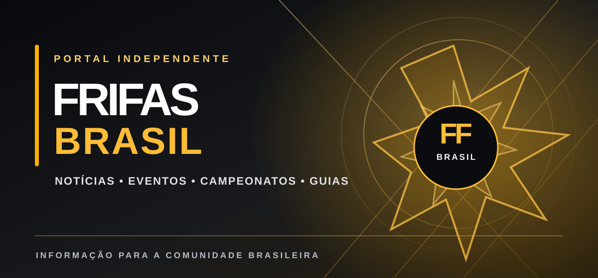
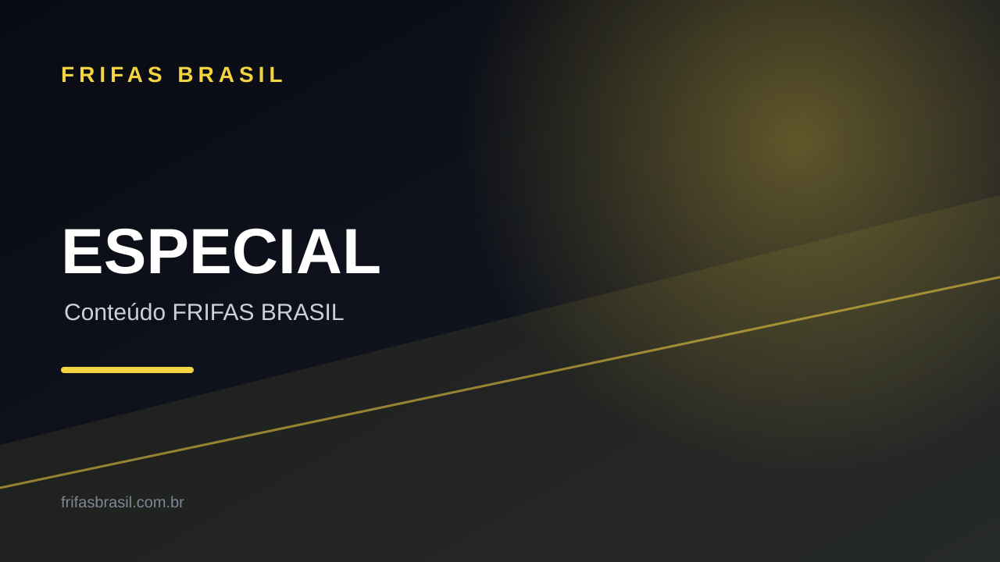

O universo Free Fire, direto ao ponto.
Notícias, eventos, campeonatos e guias para acompanhar a comunidade brasileira.

GAMING
Notícias do Free Fire
Reportagens próprias, apuração transparente e novidades para a comunidade brasileira. Consulte também nossa política editorial.
Escolha um assunto ou pesquise uma novidade do Free Fire.

Storm Arena e FFWS 2026: fase decisiva em Bangkok
A fase eliminatória 2 ocorre de 19 a 22 de novembro; a Última Chance está prevista para 27 e a Grande Final para 28.
Ler matéria →
Free Fire: Daybreak terá estreia mundial na CCXP26
Primeiro episódio está marcado para 5 de dezembro; Alok participará de um painel com a equipe de produção.
Ler matéria →Free Fire vence prêmio no GamingonPhone Awards 2026
Garena confirmou a vitória na categoria On-going Mobile Game of the Year.
Ler matéria →FFWS Global Finals 2026 está em andamento em Bangkok
A Garena confirmou 24 equipes e quatro fins de semana de competição.
Ler matéria →Simples para navegar. Fácil para acompanhar.
O FRIFAS BRASIL reúne notícias, atualizações, eventos, campeonatos e guias em um portal independente, organizado e direto para a comunidade brasileira de Free Fire.